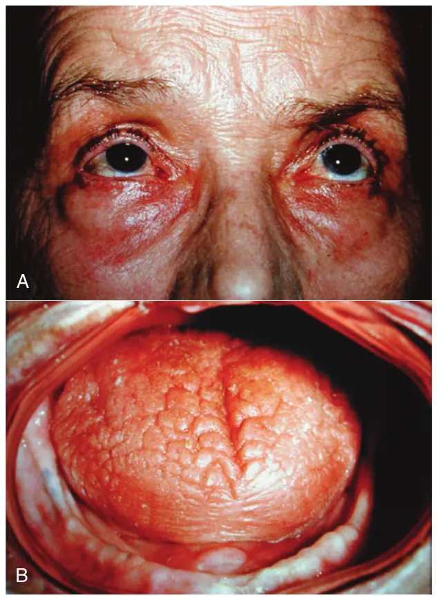
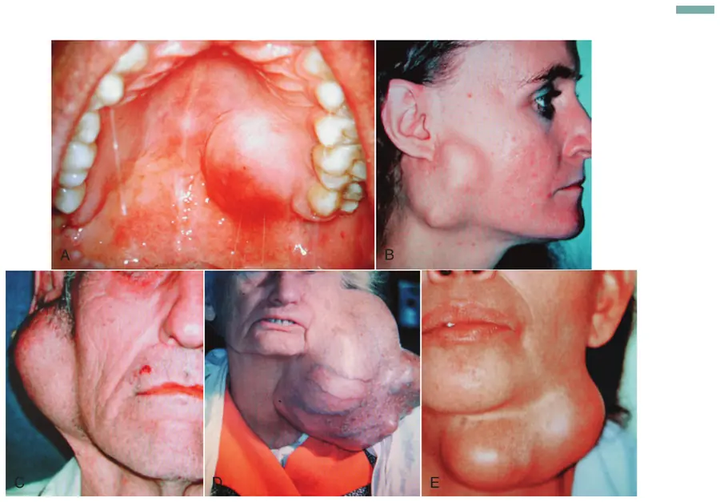

نسخه استخراجشده؛ ترجمه یا تأیید علمی انجام نشده است. وضعیت: captured
سیالومتاپلازی نکروزان — یک تقلیدکنندهی خطرناک: یک فرایند التهابی واکنشی و غیرنئوپلاستیک است که معمولاً غدد بزاقی کوچک کام را درگیر میکند، هرچند میتواند غدد کوچک هر محلی را درگیر سازد.

و منشأش: نامشخص است، ولی تصور میشود از انفارکتوس عروقی لوبولهای غدهی بزاقی ناشی شود. و علل بالقوهی کاهش جریان خون به ناحیهی مبتلا: تروما، تزریق بیحسی موضعی، سیگار، دیابت شیرین، بیماری عروقی، و فشار از پروتز.
و تظاهرش: دامنهی سنی معمول بیماران مبتلا میان ۲۳ تا ۶۶ سال است. ضایعات معمولاً بهصورت نواحی بزرگ (۱ تا ۴ سانتیمتر)، بدوندرد یا دردناک، و عمیقاً زخمی، جانبی نسبت به خط وسط کام و نزدیک محل اتصال کام سخت و نرم دیده میشوند. و هرچند ضایعات معمولاً یکطرفهاند، درگیری دوطرفه ممکن است رخ دهد. برخی بیماران یک بیماری شبهآنفلوانزای پیشدرآمد پیش از شروع زخم را گزارش میکنند.
و چرا این وضعیت نگرانکننده است؟ چون بالینی و هیستولوژیک، شبیه یک کارسینوم بدخیم است — کارسینوم سلول سنگفرشی یا کارسینوم موکواپیدرموئید. و نتیجهی تشخیص نادرست میتواند یک رزکسیون جراحی گسترده و بیمورد برای یک فرایند خوشخیم و خودمحدودشونده باشد.
و ظاهر هیستوپاتولوژیک: هایپرپلازی سودواپیتلیوماتوز، که بهصورت نفوذ اپیتلیال به بافت زیرین شبیه کارسینوم دیده میشود.
و چهار معیار هیستولوژیک کمککننده برای تمایزش از یک فرایند بدخیم: نبود پلئومورفیسم سلولی، حفظ مورفولوژی لوبولار کلی غده، ظاهر عموماً غیردیسپلاستیک جزایر یا لانههای سنگفرشی، و شواهد لومنهای مجرایی باقیمانده درون لانههای اپیتلیال.
و سرنوشتش: زخمهای سیالومتاپلازی نکروزان معمولاً ظرف ۶ تا ۱۰ هفته پس از شروع، خودبهخود ترمیم مییابند و به هیچ مدیریت جراحی نیاز ندارند.
سندرم شوگرن — یک بیماری چندسیستمی: دو نوع دارد:
و دموگرافی: علتش ناشناخته است ولی نفوذ خودایمنی قوی بهنظر میرسد. ترجیح زنانهی ۹ به ۱ دارد، با بیش از ۸۰ درصد افراد مبتلا از جنس زن، و میانگین سنی ۵۰ سال.
و ترتیب بروز علائم — که غافلگیرکننده است: بهطور کلی نخستین علائمی که پدید میآیند شکایات آرتریتیاند، سپس علائم چشمی، و دیرهنگام در سیر بیماری، علائم غدد بزاقی.
و مکانیسم: درگیری غدد بزاقی و اشکی از جایگزینی لنفوسیتی عناصر طبیعی غدهای ناشی میشود. و زروستومیا از کاهش عملکرد غدد بزرگ و کوچک ناشی میگردد، با پاروتید بهعنوان حساسترین غده.
و تشخیص: بیوپسی غدهی بزاقی کوچک لبی بسیار دقیق در برقراری تشخیص شوگرن شمرده میشود، چون تغییرات هیستوپاتولوژیک دیدهشده در غدد کوچک شبیه غدد بزرگ (پاروتید) است. و تقریباً ۵ تا ۱۰ غدهی بزاقی کوچک برای بررسی هیستولوژیک برداشته میشوند و نمرهی کانون (focus score) میگیرند؛ یک «کانون» نمایندهی تجمع ۵۰ لنفوسیت یا بیشتر، هیستیوسیت و پلاسماسل در هر ۴ میلیمتر مربع بافت غدهی بزاقی است.
و آزمون شیرمر برای جریان اشکی — چهار درجه:
و درمان: مراقبت علامتی با اشک مصنوعی برای علائم خشکی چشم و جایگزینهای بزاقی برای خشکی دهان. و افزون بر این، داروهای کولینرژیک مانند پیلوکارپین، یا فرآوردههایی مانند Biotène، میتوانند برای تحریک جریان بزاق از بافت غدهای عملکردی اندکِ باقیمانده سودمند باشند.
و ترومای غدد بزاقی — یک خط، یک تصمیم: لاسراسیونهای عصب فاسیال که قدامیتر از خطی عمودی از کانتوس جانبی چشم تا فورامن مِنتال باشند، معمولاً برای ترمیم جراحی مناسب نیستند — چون قطر الیاف بسیار کوچک است، و عملکرد معمولاً خودبهخود بازمیگردد، چون الیاف عصبی سالم مجاور کار را به عهده میگیرند.
و ترمیم مجرای استنسن: میتواند شامل آناستوموز مستقیم مجرا باشد، که در آن بخشهای پروگزیمال و دیستال مجرا شناسایی میشوند، یک کاتتر یا استنت پلاستیکی یا فلزی گذاشته میشود، و مجرا روی استنت بخیه میگردد. و کاتتر یا استنت معمولاً ۱۰ تا ۱۴ روز در جای خود میماند تا اپیتلیالیزاسیون مجرا انجام شود.
و عواقب بالقوهی ترومای غدد بزرگ: عفونت، فلج صورت، فیستول پوستی غدهی بزاقی، تشکیل سیالوسل، و انسداد مجرا در نتیجهی تشکیل اسکار، که خود به آتروفی غدهای و کاهش عملکرد میانجامد.
توزیع تومورهای غدد بزاقی — عددهای پایه:

و یک قاعدهی مهم دربارهی خوشخیمی: حدود ۷۵ تا ۸۰ درصد تومورهای غدد بزرگ خوشخیماند، و ۵۰ تا ۵۵ درصد تومورهای غدد کوچک خوشخیم هستند.
یعنی: هرچه غده کوچکتر، احتمال بدخیمی بیشتر. و اکثریت قاطع تومورهای بزاقی در غدهی پاروتید رخ میدهند، و اکثریتشان خوشخیماند — شایعترین، آدنوم پلئومورفیک.
آدنوم پلئومورفیک یا تومور مختلط خوشخیم — شایعترین تومور غدهی بزاقی:
تومور وارتین یا سیستادنوم پاپیلاری لنفوماتوزوم: تقریباً منحصراً غدهی پاروتید و بهطور مشخص دُم پاروتید را درگیر میکند.
آدنوم مونومورفیک: ضایعهای منفرد و غیرشایع از یک نوع سلول، که عمدتاً غدد کوچک لب بالا (آدنوم کانالیکولار) و غدهی پاروتید (آدنوم سلول بازال) را درگیر میکند. میانگین سن ۶۱ سال، و ضایعه معمولاً بهصورت تودهی بدونعلامت و آزادانه متحرک بروز میکند. درمانش برداشتن سادهی جراحی است.
و حالا بدخیمها — به ترتیب شیوع:
۱ — کارسینوم موکواپیدرموئید، شایعترین تومور بدخیم غدهی بزاقی:
۲ — آدنوکارسینوم پلیمورفوس با درجهی پایین، دومین بدخیمی شایع غدد بزاقی: نخستین بار در ۱۹۸۳ توصیف شد؛ پیش از شناساییاش، بسیاری موارد احتمالاً بهاشتباه کارسینوم آدنوئید سیستیک تشخیص داده میشدند.
۳ — کارسینوم آدنوئید سیستیک، سومین بدخیمی شایع غدد بزاقی داخلدهانی: